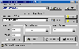

今日偶得一个制作索引图的软件Thumb Nailer，感觉极“COOL”。它不仅可以将图片进行任意放大缩小，更绝的是可以将缩小后的图片进行排列、处理并制成HTML网页文件，从而实现网页中的图片索引。使用Thumb Nailer，一个图库网页的制作现在简单到只要点几下鼠标了，这对需要时常使用图片的朋友来说无疑是一大福音。
运行Thumb
Nailer后，在“Input Folder”栏中指定源图片所在目录。“Output Folder”栏中指定图片缩放后存放的目录。需要注意的是，如果要实现点击索引图后可以出现源图的话，源文件夹和目标文件夹需相同。在“Ouput
Size”栏中可设置输出图片的长宽像素。“Ouput Format”栏中可设置输出图片的格式。“Resize Method”中可设置缩放的方法，一般选择“Exact
Size”(准确大小)即可。设置好后便可进入“Advanced”进行下一步设置了。选择“Html”选项卡，将“Creat Html Files”前的复选框选中，便可将图片缩放后制成网页了。“Images
per Html”中可以设置每页的图片数量，“Creat Links to Inpout”项也要选上，这样一来才能实现源图片的输出。“Creat
Links to Inpout”项下方的“Make Table”选上后可在图片周围加上网格，并可以设定每行的格数。到此为止便完成了设置工作，你可以点击“Start”按钮静待索引网页的生成了。
以上的一些设置只是比较基本的，“Thumb Nailer”还提供图片效果的设置、进行图片混合处理、在图片上增加文字等功能。另外该软件的试用版只提供同时处理100张图片。大家如果对该软件感兴趣的话可以到Http:∥wwwsmalleranimalscom去下载。
(河北 牛辉) |